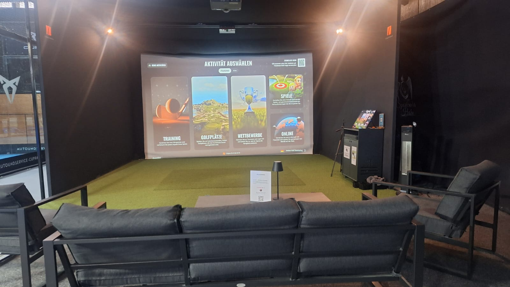

- Start
- Golf-Simulator
Golf-Simulator
Ganzjährig Golf spielen — auch im Januar, auch bei Regen, auch nach Feierabend.
Geretsried
Golf-Simulator beim STC Oberland
Der Simulator misst Schlägerkopf und Ballflug und rechnet daraus die Bahn. Du siehst sofort, was Schlagfläche, Winkel und Geschwindigkeit anrichten — Rückmeldung, die du auf der Driving Range so nicht bekommst.
Genutzt wird er auf zwei Arten: als Training über den Winter, damit die Saison nicht bei null anfängt, und als Runde mit Freunden am Abend.
- Unabhängig von Wetter und Platzsaison
- Bis zu vier Personen pro Buchung
- Sofortige Auswertung jedes Schlags
- Auch für Einsteiger ohne Platzreife

Preise
Was eine halbe Stunde Golf-Simulator kostet
Gastpreise pro Simulator und halbe Stunde — ein Tarif an allen buchbaren Zeiten.
| Variante | pro halbe Stunde |
|---|---|
| Golfsimulator, bis 4 Personen | 17,50 € |
| Schlägerverleih | kostenlos |
- Mitglieder zahlen 10 % weniger auf Hallenplätze im Winter und auf Padel-Indoor (nicht bei Abo).
- Senioren-Special: Nur in Geretsried und nur in den Wintermonaten. Mo–Fr, 7–14 Uhr, 10 € Rabatt pro Platz, ab zwei Spielern über 55 Jahren.
- Kinder und Jugendliche bis 18 spielen Mo–Do zu festen Zeiten kostenlos.
- Wellpass: 1 h gratis (persönlicher Anteil), 25 % Rabatt auf Tennis-Einzelstunden, bis zu 50 % Rabatt auf ausgewählte Leistungen — Details im Buchungssystem.
- Kostenfreie Stornierung online bis 72 Stunden vorher, bis 48 Stunden vorher gegen 6 € per Mail.
Angezeigte Preise sind die regulären Standardpreise pro Simulator und halbe Stunde, inklusive Umsatzsteuer. Aktuelle Aktionen und Sonderangebote siehst du im Buchungssystem auf Eversports.
Häufige Fragen
Golf-Simulator — kurz erklärt
Brauche ich eigene Schläger?
Nein. Schläger kannst du vor Ort ausleihen — ohne Leihgebühr.
Brauche ich Platzreife?
Nein. Am Simulator kann jeder anfangen — er ist sogar der geduldigere Ort dafür als eine Driving Range.
Wie lange dauert eine Runde?
Für 18 Bahnen zu zweit solltest du gut zwei Stunden einplanen, zu viert entsprechend mehr. Reines Techniktraining geht auch in einer Stunde.
Platz frei?
Belegung in Echtzeit, Buchung in unter einer Minute. Täglich von 7 bis 23 Uhr geöffnet.